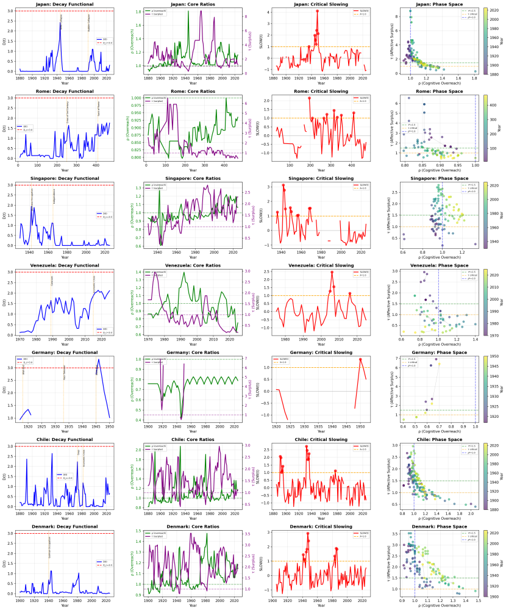

It began with a conversation with GPT that became unexpectedly productive. I was looking to find evidence that human societies were dangerously indeterminate, so as to strengthen arguments against nuclear weapons.
The eight nodes and four metrics were originally chosen because they were the smallest set that could credibly map a complex adaptive system onto a society without violating first principles. That was just Occam's Razor applied.
Once you take seriously the idea that societies are complex adaptive systems, the thermodynamic grounding almost forces itself on you. Systems that coordinate work, process information, store memory, and dissipate energy become classical objects. Coherence, capacity, stress, and abstraction become the state variables that describe how any human system can remain far from equilibrium without tearing itself apart.
Every society — whether it's the Roman Empire, modern China, or Australia — has to coordinate decisions, defend itself, generate and enforce legitimacy, store and allocate wealth, maintain skilled production, sustain mass labour and reproduction, preserve institutional memory, and move goods and information.
Eight are required because if you merge cultural meaning with administrative memory, you can't tell whether a society is losing its shared reality or its capacity to remember. If you merge skilled craft with mass labour, you erase the pattern where the technically competent parts of a society are functioning while the labour substrate is overheating. If you merge exchange with wealth storage, you miss how commerce can become increasingly abstract and self-referential while the allocative core loses coherence.
Eight is the minimum resolution that can model the tensions we recognise as history: centre versus periphery, capital versus labour, security versus production, narrative versus lived experience, complexity versus coherence. Eight nodes keep the anatomy intact.
The Eight Nodes
Helm
Coordinate decisions — the administrative and executive centre
Shield
Defend the system — security, coercion, boundary maintenance
Lore
Generate and enforce legitimacy — narrative, law, symbolic order
Vault
Store and allocate wealth — fiscal, monetary, capital functions
Craft
Maintain skilled production — technical competence and innovation
Hands
Sustain mass labour and reproduction — the broad working population
Move goods and information — logistics, communication, exchange networks
The Four Metrics
Coherence
Whether the node is internally organised and aligned, and can reliably coordinate with others.
Cognitive axis
Abstraction
The complexity of the symbolic layer — laws, planning, ideology, bureaucratic and narrative machinery.
Cognitive axis
Capacity
How much usable capability the node can bring to bear — money, competence, institutional reach, logistical strength.
Metabolic axis
Stress
The load the node is carrying — pressures and conflicts that degrade function.
Metabolic axis
The spooky part was how well it worked. Coherence and abstraction became a snapshot of a cognitive axis: how the society "thinks," and whether its thinking is grounded or floating above fragmentation. Capacity and stress became the metabolic axis: whether the society has surplus, or whether it is running hot and reactive.
This taxonomy became a formulation when the nodes became a network. Civilisations look fine right up until the moment their couplings fail — the security function decouples from the coordinating centre, the wealth-holding class detaches from the reproduction of labour, the narrative layer becomes performative, the bureaucratic memory becomes too expensive to maintain and begins to rot. When those bonds weaken, shock propagates.
With eight nodes, the number of possible pairwise relations is large enough for the bond structure to describe a genuine system property and small enough that a human mind can grasp it.
At some point, the model stopped feeling like something we were inventing and started being something we were uncovering. You can still change the labels, tweak the definitions, modify the scoring method; the underlying structures are still seen.
The luck is that this minimal, testable structure appeared that we could use to start treating the problem of history scientifically. Once you have this instrument, you can do the thing historians rarely get to do: you can score, compare, plot, look for invariants, and check whether the same patterns recur across cultures and eras. You can test whether what you are seeing is merely a story you like, or a signature that persists even when you would prefer it not to.
Over the months that followed, the model repeatedly highlighted phase changes the way good physical models do. It flagged the difference between integrated sophistication and brittle sophistication — between high abstraction grounded in coherence, and high abstraction floating above fracture. It distinguished societies that were stable because they had surplus from societies that looked stable because they were dissociated. It clarified why some crises are sticky and hard to reverse: once reactive mode takes over, the system is no longer free to deliberate itself back to health. It must first regain metabolic margins and rebuild couplings.
If there is a moral to the origin story, it is that structured dialogue with AI can act as a kind of modelling wind tunnel. You can iterate quickly, challenge your own assumptions, and keep asking the same hard question: does the structure survive contact with reality? In that sense, GPT was a partner in disciplined reduction — a tool for repeatedly stripping away the unworkable until what remained was functional.
CAMS suggests that civilisations, for all their messy surface detail, have a discoverable anatomy. That a small set of state variables govern their phase behaviour. History is not a narrative; it is dynamics. That does not make the future predetermined. It makes it legible.
The eight-node, four-axis model enables us to see societies clearly enough to argue honestly about them. It produces results that useful instruments do: stable signals, recurring patterns, and warnings you don't get from anecdotes.
It is the kind of solution that arrives when you have been staring at a problem long enough to recognise a usable simplicity when it finally appears.
Three Supporting Artefacts
Strong thermodynamic consistency across seven diverse civilisations and historical periods.
The CAMS Decay Formalism v2 demonstrates strong thermodynamic consistency across seven diverse civilizations and historical periods. The framework successfully identifies crisis periods, provides early warning signals, and exhibits the predicted correlational structure that validates its physical grounding.
CAMS Decay Formalism v2 — Singapore, Venezuela, Germany, Chile. Four panels per society: Decay Functional D(t), Core Ratios (ρ, τ, B̄), Critical Slowing Index, Phase Space trajectory.

CAMS Decay Formalism v2 — extended civilisation set. Same four-panel structure: D(t) evolution, system ratios, critical slowing, phase space manifold.
Societies do not choose their collective behaviour — they are constrained by slowly varying macro fields.
Drawing on Hermann Haken's synergetic theory, this artefact shows that societies do not choose their collective behaviour through aggregated individual decisions — they are constrained by slowly varying macro fields that emerge from, and then dominate, the fast local dynamics of agents and institutions.
A clean, non-rhetorical assessment of the CAMS GTS-EV redraft and the multiscale viability operator.
A careful review of the CAMS GTS-EV redraft and the multiscale viability operator material. At a structural and scientific level, the model checks out. More importantly, it now clears several hurdles that would have sunk earlier versions. What is sound, what is internally consistent, and where the remaining vulnerabilities lie.
Eight nodes are the minimum resolution that can model the structural tensions recognisable as history without collapsing analytically distinct failure modes
Four metrics (coherence, capacity, stress, abstraction) form two natural axes — cognitive and metabolic — sufficient to describe phase behaviour in any human coordination system
The bond structure between nodes, not the node values alone, determines whether a society can absorb or propagate shocks
AI-assisted disciplined reduction (iterative stripping of the unworkable) was the practical method that produced the framework
CAMS Decay Formalism v2 validates thermodynamic consistency across seven civilisations — stable signals, recurring patterns, early warning